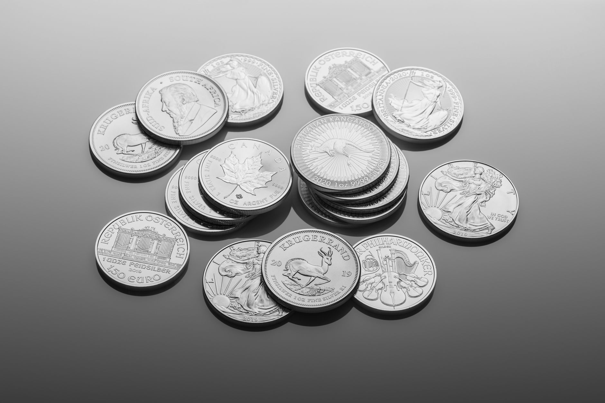

Tuskegee → Washington opened the school in 1881.
Agriculture → Carver taught science and crop rotation.
Commemorative → The paired issue ran from 1951 to 1954.

Design → Isaac Scott Hathaway designed the coin.
Why the Carver-Washington Half Dollar honors two educators reveals a deliberate effort to recognize the contributions of two pivotal figures at Tuskegee Institute. The commemorative coin, produced between 1951 and 1954, stands as the last U.S. Commemorative issue before the modern program began in 1982. This silver dollar celebrates the legacies of Booker T. Washington and George Washington Carver, honoring their intertwined roles in shaping the institution’s identity and impact. This article will explore the circumstances surrounding the creation of this unique coin, detailing the individuals involved and the process by which their achievements were immortalized.
The story begins with Booker T. Washington’s arrival in Tuskegee in June 1881, where he oversaw the opening of the school on July 4 with 30 students. Simultaneously, George Washington Carver joined the faculty in 1896, dedicating 47 years to agricultural teaching and promoting crop rotation to restore depleted soil. Isaac Scott Hathaway designed the coin, featuring Washington and Carver on the obverse and a map of the United States on the reverse. The Mint issued the coins no later than August 7, 1954, with proceeds supporting designated beneficiary organizations.
Washington builds a school in Tuskegee
Booker T. Washington arrived in Tuskegee in June 1881; the school opened on July 4 with 30 students. This marked the beginning of a practical education model at the institution. The school’s opening provided vocational training, focusing on skills needed for immediate employment. The curriculum emphasized hands-on learning, preparing students for careers in agriculture, mechanics, and other trades. This approach was designed to equip individuals with the tools necessary to contribute to the Southern economy.
The school’s establishment was a key connection between Washington and George Washington Carver. Washington’s biography details his role in establishing the school, and the 1881 opening with 30 students directly linked the two men’s involvement. Carver’s later work at Tuskegee built upon this foundation of practical education.
The institution’s purpose was to provide a pathway to self-sufficiency for African American students. The school’s initial enrollment of thirty students represented a significant step toward fulfilling this mission. This early focus on vocational training would later become a foundation of Tuskegee Institute’s approach to education.
Carver brings agricultural science to the campus
George Washington Carver joined Tuskegee’s faculty in 1896 and spent 47 years there teaching agricultural science and promoting crop rotation to restore depleted soil. His work began immediately upon his arrival at the institution. Carver’s primary focus was developing sustainable farming practices for the South’s agricultural market. He implemented crop rotation techniques, a system where different crops are grown in a planned sequence on the same land. This was crucial because Southern soils had been severely damaged by years of cotton cultivation, leading to a decline in fertility. Carver’s approach aimed to revitalize these soils by alternating crops, enriching the land and preventing the buildup of harmful elements.
Carver’s methods were particularly relevant to the challenges faced by Southern farmers. The repeated planting of cotton had exhausted the soil’s nutrients, making it difficult to sustain yields. Carver’s crop rotation strategies provided a practical solution, offering farmers a way to maintain productivity and improve the long-term health of their land. This work was central to his role at Tuskegee and contributed significantly to the advancement of agricultural science in the region.
Congress joins the names on a coin
The Carver-Washington Half Dollar arrived after the lifetimes of its subjects due to a protracted process of congressional authorization and coin production. In 1946, Congress authorized the issuance of commemorative half dollars. However, the initial authorization was amended in 1951, leading to the production of the coins between 1951 and 1954. The paired portraits of Booker T. Washington and George Washington Carver were a key feature of the design, reflecting the dual honor being bestowed upon the two men.
The Mint issued the coins no later than August 7, 1954, and the proceeds from their sales were directed to designated organizations. This series represented the last U.S. Commemorative issue before the establishment of the modern commemorative coin program in 1982.
Isaac Scott Hathaway was identified as the designer of the coin. The obverse featured the paired portraits of Washington and Carver, while the reverse depicted a map of the United States. The production and distribution of these coins concluded by August 7, 1954, marking the end of the commemorative series.
Hathaway’s design and the 1954 ending
The Mint identifies Isaac Scott Hathaway as the coin’s designer; the obverse pairs Washington and Carver, and the reverse shows a map of the United States. This paired issue showcased the contributions of two prominent figures at Tuskegee Institute. The design reflected the dual focus of the commemorative coins: honoring the legacy of Booker T. Washington, the founder of the school, and recognizing the new work of George Washington Carver in agricultural science. The map reverse provided a visual representation of the nation, subtly connecting Carver’s work to the broader American market and agricultural potential.
The Mint states that the coins were issued no later than August 7, 1954, and that proceeds went to named beneficiary organizations. This final issue date marked the conclusion of a series produced between 1951 and 1954. The proceeds from the sale of these commemorative half dollars were directed to specific organizations, reflecting a deliberate effort to support institutions aligned with the themes of education and agricultural advancement.
Also, the series was the last U.S. Commemorative issue until the modern program began in 1982. This signifies a deliberate ending to a specific type of commemorative coin production. The final issue date of August 7, 1954, represents the culmination of this particular commemorative effort.
Related
- How the Kennedy Half Dollar Became a Memorial and a Marker of Change
- How the Walking Liberty Design Returned on the Silver Eagle
- When a Silver Dollar Bag Changed Rarity: The Hidden-Gem Stories Behind Hoards
Read next: How the Kennedy Half Dollar Became a Memorial and a Marker of Change